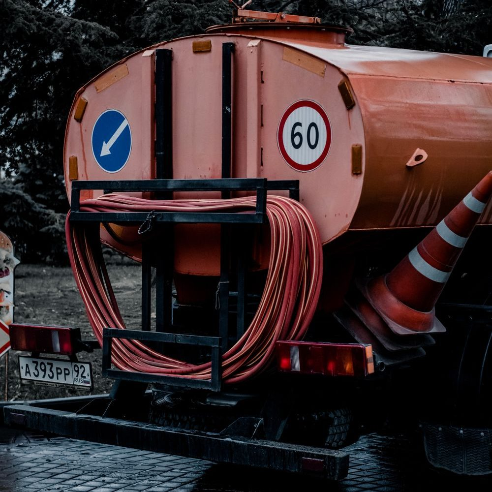

About
Septic pumping, installation and sewer work for homes and businesses around Fairfield and Somerset County, serving the area since 1980.
Visit & Contact
Phone
(207) 453-6648
Email
andrealongstreet3@gmail.com
Address
4 Gibson St
Fairfield, ME 04937
Hours
Open 24 hours, 7 days
Services & Prices

Illustrative photo
- Septic tank pumping
- Septic tank installation & construction
- Sewer systems & drain cleaning
- Cesspool pumping
- Grease trap cleaning
- Porta potty rental
- Waste disposal
From the business's public listings (checked Oct 30, 2026). Prices aren't published — call for a quote.
Reviews
Sample reviews for this demo — your real customer reviews would go here.
★★★★★“Prompt, professional service and they left the yard clean. Highly recommend.”
— Sample review
★★★★★“Easy to schedule and very knowledgeable. Will use them again.”
— Sample review